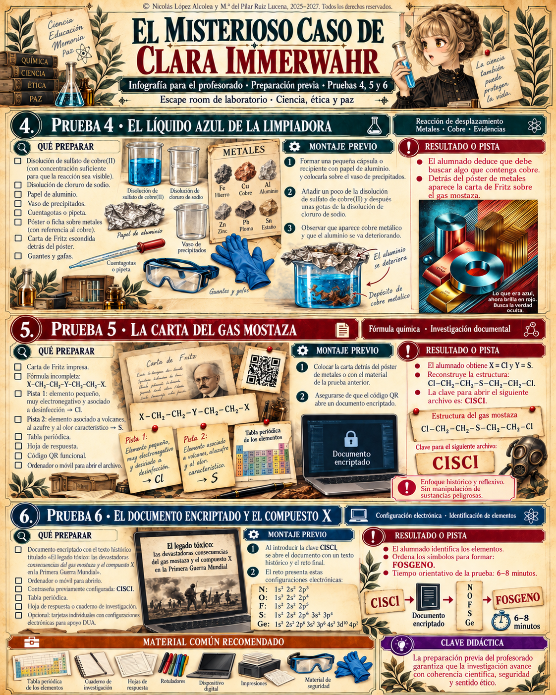
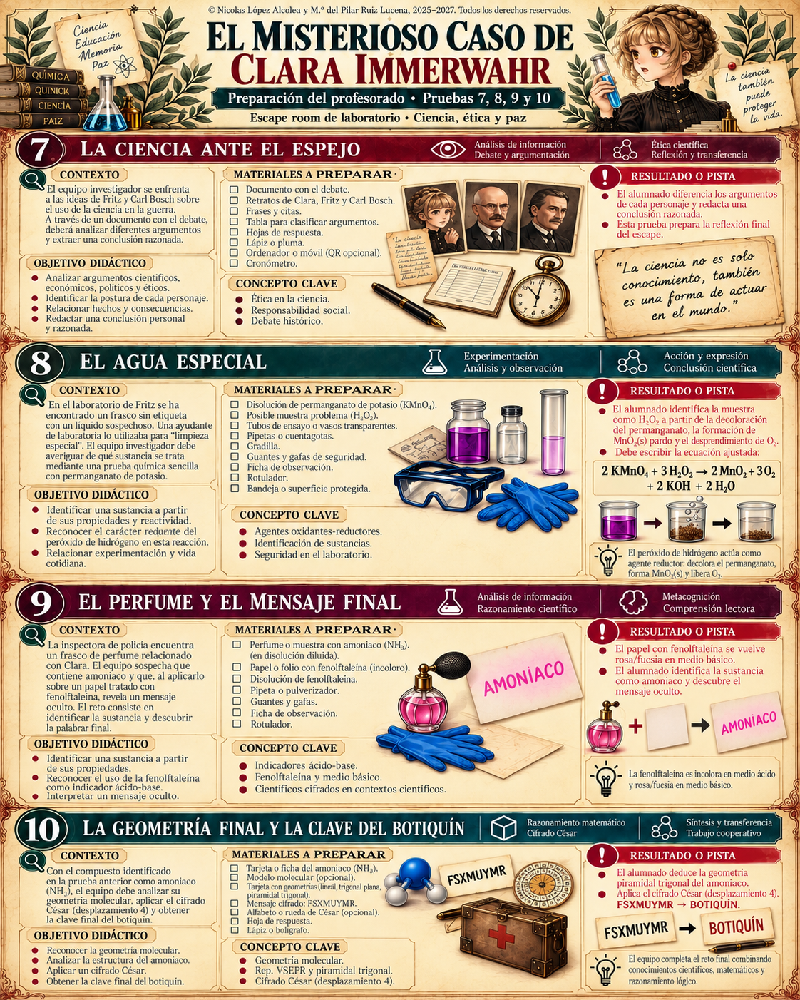

← Volver a la preparación
Resumen de preparación de las diez pruebas
Pulsa sobre cualquier imagen para consultarla a tamaño completo.
Preparación de las pruebas 1 a 3 · Pulsar para ampliar

Preparación de las pruebas 4 a 6 · Pulsar para ampliar

Preparación de las pruebas 7 a 10 · Pulsar para ampliar